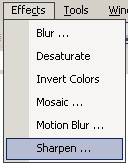

Sharpen Effect
|
 The Sharpen Effect (Effects-->Sharpen) essentially "de-blurs" an image, making the colors sharper and the edges more discernable. The user can select from the slide bar the intensity of the sharpening.
|
| Notice: The Sharpen Effect, along with the other effects will operate only in a selected region. If no region is selected (as in the image below), the effect is applied to the entire layer. Depending on the settings, the image size, and the internal clock speed of the CPU, these effects may take a considerable time to complete. |
An image altered by the Sharpen Effect:
| Original Image | Sharpen Setting Of 2 |
|
|
|
| Sharpen Setting Of 3 | Sharpen Setting Of 4 |